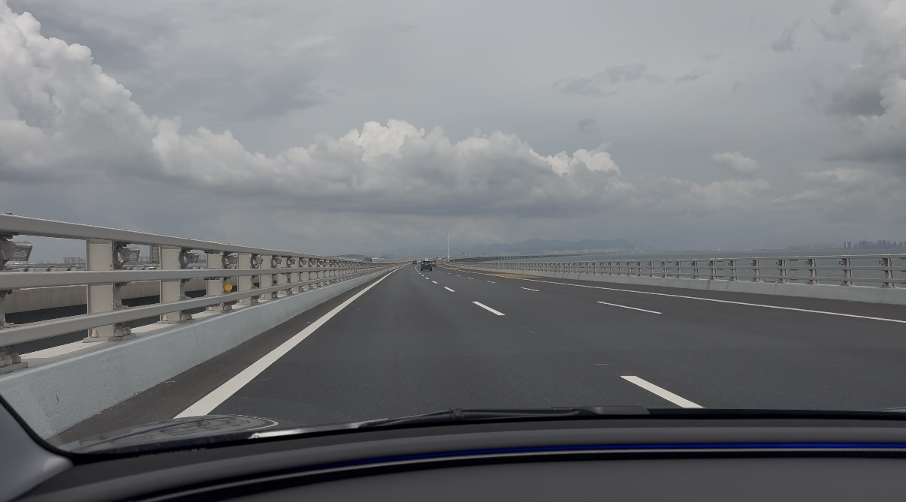
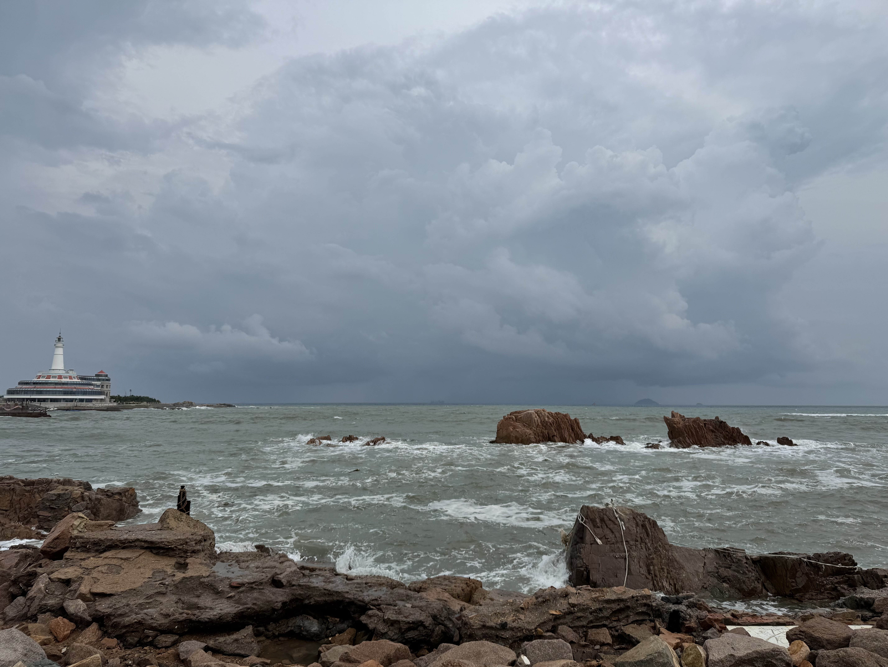
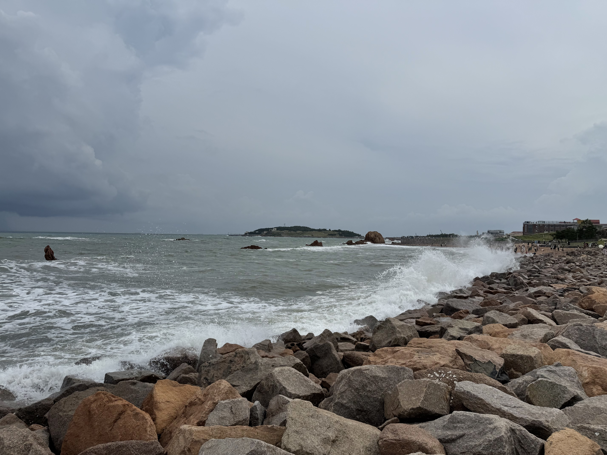
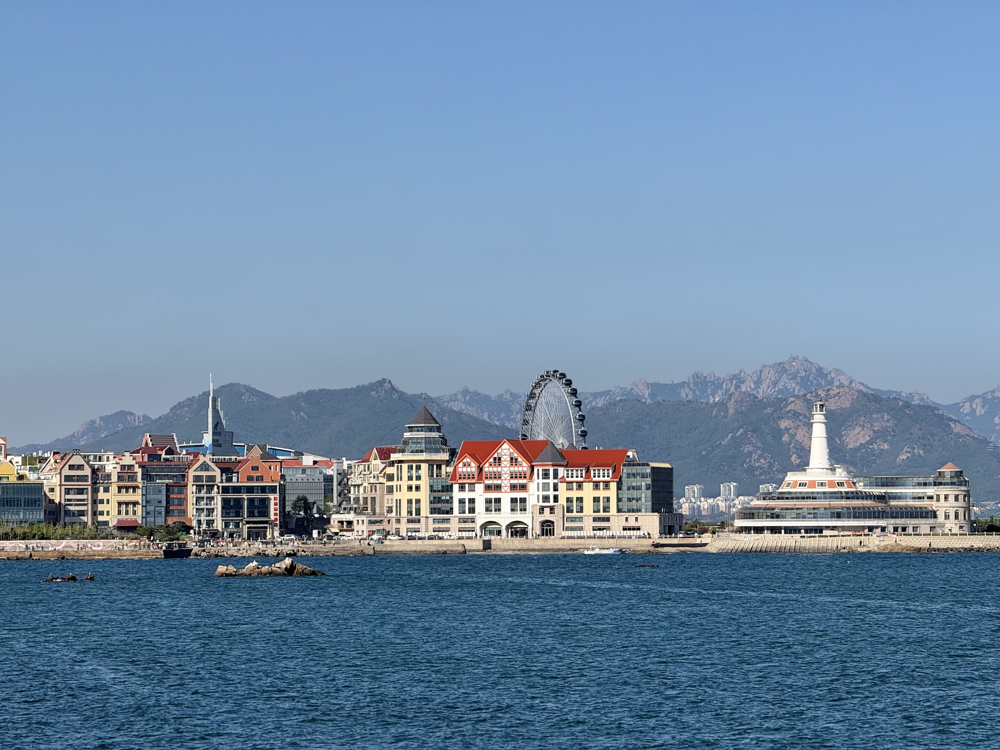
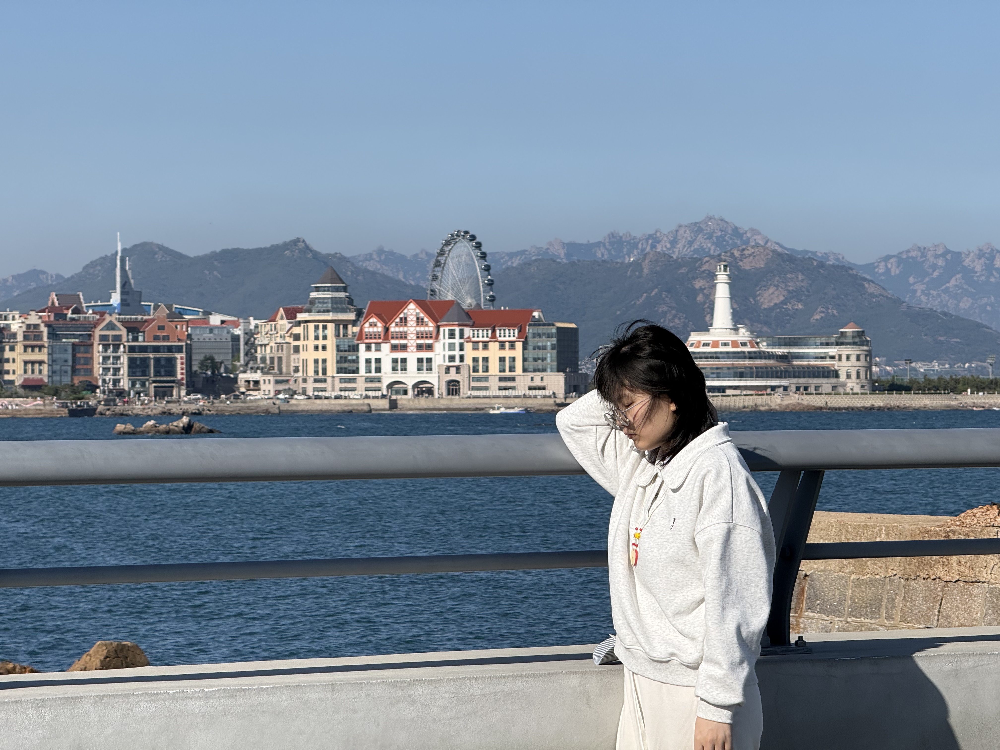
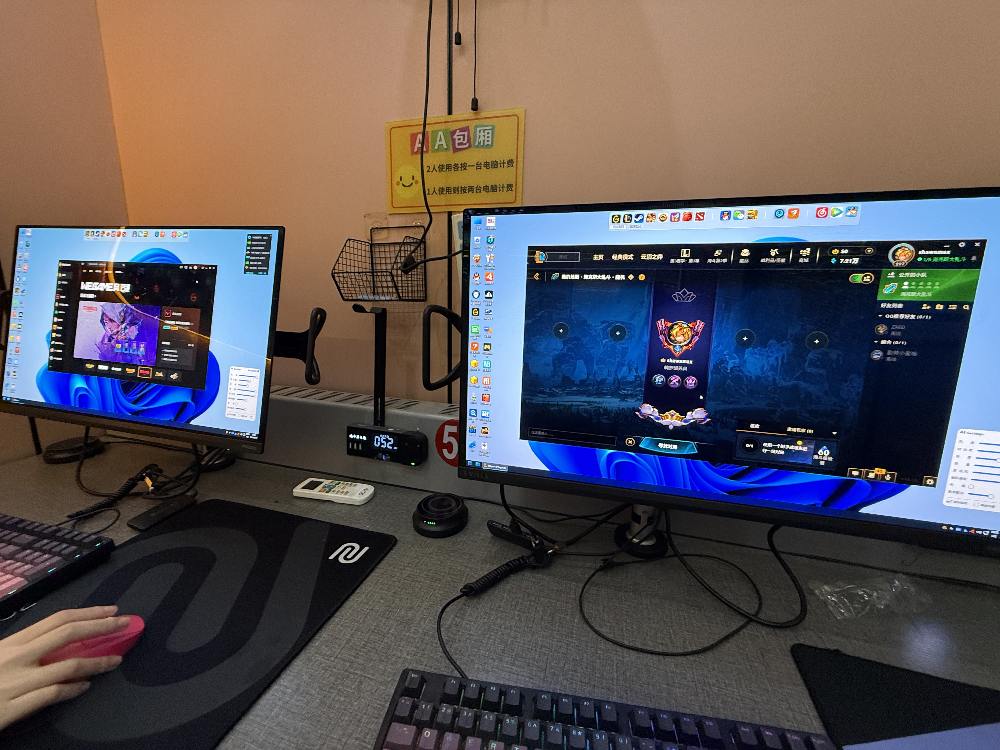
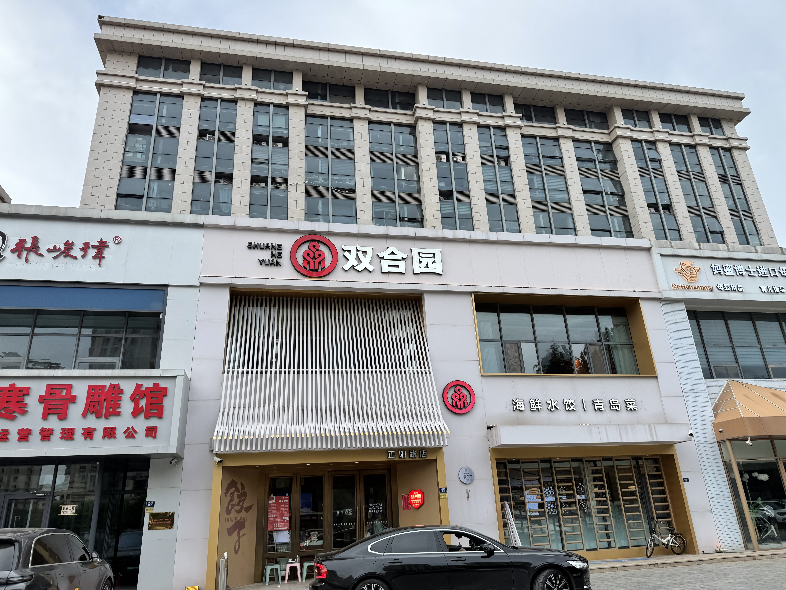
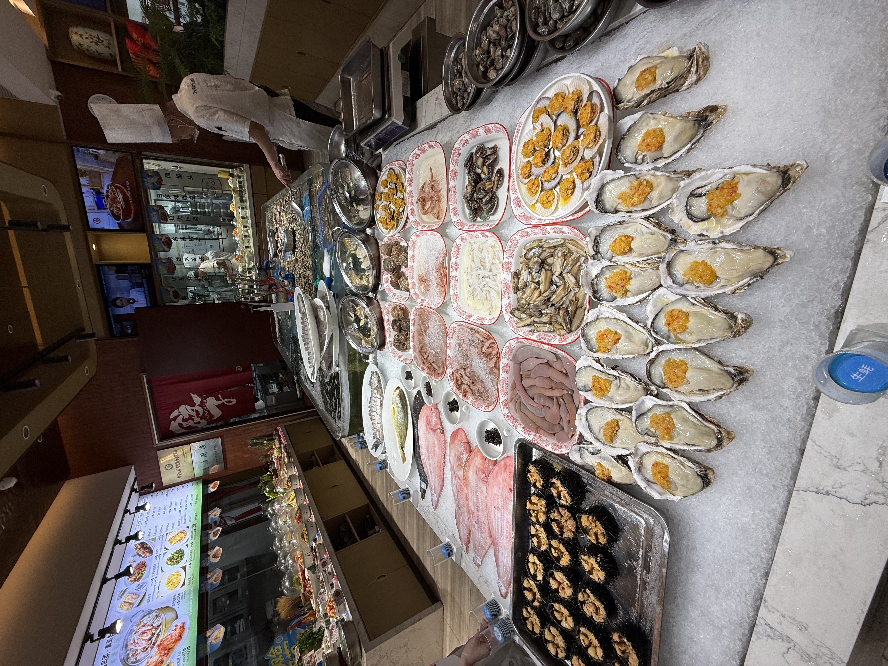
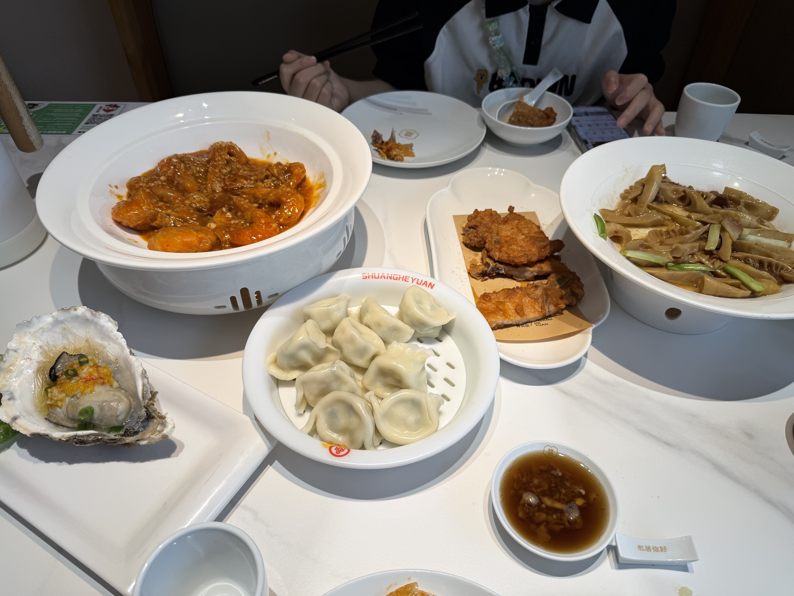

在济南呆了两天，出发去青岛。
路过胶州湾大桥。

先去了海之恋公园，可惜受台风白海豚影响，海水比较浑浊，和五一来的那次简直天壤之别，天又开始下雨了，于是回酒店休息。


上次来海之恋公园的美照


第二天想去青岛极地海洋世界，看了下攻略，正值暑期，人流量很大，作罢，不如上网双排。

要离开青岛了，再炫一顿小兄弟推荐的双合园，味道真不错，还好没错过。



青岛之旅结束，回济南修正下，明天去淄博吃烧烤。